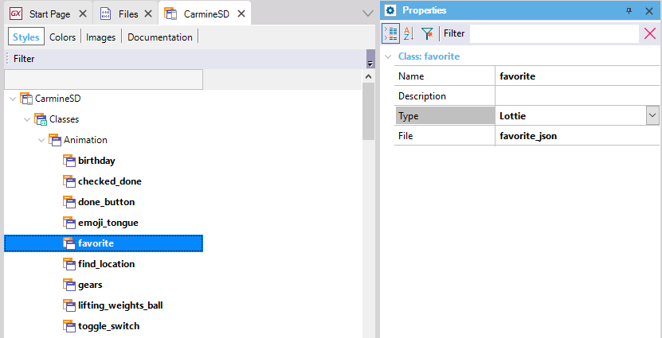

HowTo: Include animations in applications
GeneXus allows integrating animations when developing applications, more specifically, Lottie animations.
Lottie is an animations library, created by Airbnb. It is highly flexible, allows creating any kind of animations, uses small files, and provides a JSON API to integrate the animations in mobile applications. With these JSON files, you can include the animations in a GeneXus Knowledge Base. Many design software tools provide export capabilities to Lottie JSON format files. In addition, there are several animations repositories (like Lottie Files), where a lot of animations in JSON files can be downloaded.
Add animations to the KB
To include the animations in the Knowledge Base, you need to do two things:
1. Add the Lottie JSON files as a File object in the Knowledge Base.
2. Create Animation classes in the Theme
In the Themes, there is a new classes category named "Animations." For each animation to be included in the KB, a new Animation class must be defined, setting "Lottie" in the Type property and setting the File object containing the Lottie JSON animation file in the File property.

After the class is created, the animation is ready to be included in the application.
Include the animation in the application
Now that the animations are included in the KB, you can proceed to integrate them into the application. There are four ways to make this integration:
1. Animation View User Control
Using the Animation View User Control, an animation can be included on any screen of an application. The control provides methods that allow setting the animation and managing its execution and progress.

Event ClientStart
Composite
AnimationView1.SetAnimation(ThemeClass:Birthday, true)
AnimationView1.Play()
EndComposite
Endevent
Event 'PauseAnimation'
AnimationView1.Pause()
EndEvent
Event 'SetProgress'
Composite
&Progress = 0.5
AnimationView1.SetProgress(&Progress)
EndComposite
EndEvent
2. Customize the loading of forms and grids (Smart Devices only)
It is possible to use animations to customize the loading process of object forms and grids. That is, you can replace the usual loading circle with a more sophisticated Lottie animation.
To do this, there is a new property in Form and Grid classes in Smart Device Themes, named Loading Animation Class where an animation can be set using the Animation classes defined in the Theme with the Lottie files.
3. Customize Progress Indicator controls
An animation can be used to customize a Progress Indicator User Control control. In order to do this, a Progress theme class has to be created and an Animation-type class name set in the Animation Class property of this class. The indicated animation will displayed when the Progress Indicator User Control is shown.
4. Customize Launch Screen (Smart Devices only)
Is possible to use an animation as the Launch Screen of our Mobile Smart Devices application. This can be set in the Application class properties in Theme for Smart Devices objects.